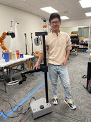

|
Yixuan Huang Hello, my name is Yixuan Huang. I'm a final-year Ph.D. candidate in the Kahlert School of Computing at the University of Utah. I work on algorithms to reason about inter-object relations and how these relations change based on long-horizon robot actions in diverse household environments. I am fortunate to be advised by Prof. Tucker Hermans. I was a Visiting Student Researcher (VSR) at Stanford University, where I worked with Prof. Jeannette Bohg in the Interactive Perception and Robot Learning Lab. I got my bachelor's degree in Computer Science and Engineering from Northeastern University in 2020. During my undergraduate years, I worked with Prof. Sicun Gao at UC San Diego. I am on the job market for postdoc and industry research scientist positions. Please reach out if you are interested in my research! yixuan.huang[at]utah.edu / CV / Google Scholar / Github / Linkedin |

|
|
|
-
My research goal is to ground logical goals and sensory information in robot skills. To achieve this, I study planning for robot manipulation with learned relational dynamics. Specifically, I focus on learning to predict relational dynamics from partial-view point clouds, which enables the robot to solve challenging real-world tasks including:
- Planning to logical goals with manipulating multiple dynamically interacting objects (RD-GNN).
- Reasoning about how the manipulated objects interact with the structural elements of the environment (eRDTransformer).
- Leveraging objects-oriented memory with a video tracker to reason about occluded objects (DOOM and LOOM).
- Solving long-horizon manipulation tasks with a composable planning framework (Points2Plans).
- Detecting failure cases, recovering from them, and improving the dynamics model using these cases (Ongoing).
|
|
|
Points2Plans: From Point Clouds to Long-Horizon Plans with Composable Relational Dynamics
Yixuan Huang, Chirstopher Agia, Jimmy Wu, Tucker Hermans, Jeannette Bohg. Under Review project page / arXiv / code |
|
Undergraduate research project: This project focused on addressing safe reinforcement learning problems. Our goal was to design RL algorithms that maximize cumulative rewards over time while avoiding collisions. I began with a classic racecar example and created a simulation environment using PyBullet. To achieve our goal, we designed two sub-policies to address the objective separately and employed an additional factored policy to select between the sub-policies. Our final evaluation demonstrated that we achieved near-zero violations with low sample complexity during the testing benchmarks. |
|
|
Undergraduate research project: In this project, we used a drone to fly around an object and automatically capture a set number of photos for a 3D reconstruction task. We combined a reinforcement learning algorithm with state estimation to find the optimal drone trajectory for achieving high-quality 3D reconstruction. |
|
|
Ph.D. first-year rotation project: In this work, we take steps toward developing a system capable of learning to perform context-dependent surgical tasks by learning directly from expert demonstrations. To achieve this, we present and evaluate three approaches for generating context variables from the robot's environment. The environment is represented by partial-view point clouds, with approaches ranging from fully human-specified to fully automated. |
|
|
During the middle of my Ph.D., I worked with the KUKA iiwa robot equipped with a 3-fingered underactuated hand with built-in TakkTile pressure sensors. I designed various manipulation primitives (e.g., grasp, place, dump, push) and executed them on the KUKA iiwa robot. I published three papers (RD-GNN, eRDTransformer, and DOOM and LOOM) with this robot. |
|
|
During my visit to Stanford University, I worked with a customized holonomic mobile base combined with a kinova arm. This robot is capable of navigating, grasping, placing, pushing, pulling, and even tossing! Using these primitives, the robot can even feed you snacks (e.g., an apple). I completed a project (Points2Plans) with this impressive robot. |
|
|  |
For the final project of my Ph.D., I am working with a Stretch robot. I enjoy working with this lightweight yet capable robot. I will design multiple primitives for the Stretch and focus on my final project, which involves reasoning about failure cases. |
- Program Committe/Reviewer:
- International Conference on Robotics and Automation (ICRA) (2023, 2024, 2025)
- Conference on Robot Learning (CoRL) (2023, 2024)
- Robotics: Science and Systems (RSS) (2024)
- International Conference on Intelligent Robots and Systems (IROS) (2024)
- Robotics and Automation Letters (RA-L) (2024)
- International Conference on Learning Representations (ICLR) (2025)
- IEEE Transactions on Artificial Intelligence (TAI) (2024)
- IEEE Transactions on Instrumentation and Measurement (TIM) (2024)
- Workshop on Learning Effective Abstractions for Planning (LEAP @ CoRL) (2024)
- Fall 2022: Teaching mentorship CS 4300: Artificial Intelligence University of Utah
- Spring 2022: Teaching mentorship CS 4300: Artificial Intelligence University of Utah
- Summer 2022: Robotics lab tour co-organizer, University of Utah Bridge Program
- Summer 2023: Robotics lab tour co-organizer, University of Utah Bridge Program
- International Symposium on Medical Robotics Best Paper Award Finalist (2021)
- International Symposium on Medical Robotics Best Student Paper Award Finalist (2021)
- National Scholarship by Ministry of Education of China (2017)
- National Scholarship by Ministry of Education of China (2018)
|
Website source from Chris Agia |